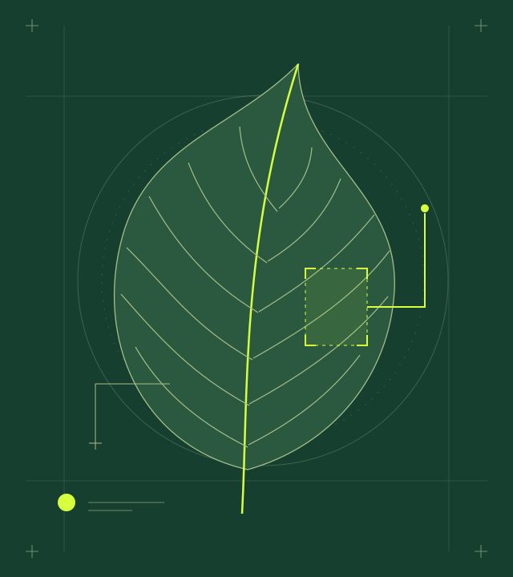

Software engineer.Systems thinking. Product instinct.
I build softwarewith consequence. 
FIELD STUDY / 01 Foliage Care. Thoughtful APIs, intelligent systems, and everyday tools.
Selected ↓
PYTHON ✦ FASTAPI ✦ REAL-TIME SYSTEMS ✦ COMPUTER VISION ✦ PRODUCT CRAFT
(01) Selected work
Things I’vereal. 2023—NOW
01 / FIELD JOURNAL OBSERVE. UNDERSTAND. CARE. AI / COMPUTER VISION
FoliageCare A photograph becomes a starting point for plant-health guidance, care plans, and multilingual follow-up.
UNDER THE SURFACE FastAPI shapes model responses into a structured diagnosis. Firebase keeps the care history connected.
Python FastAPI Gemini Firebase
02 / TABLE NOTES ONE TABLE. SHARED STATE. MULTIPLAYER / REAL-TIME
JudgementOnline A private table for friends, with synchronized play and a game engine that keeps everyone on the same page.
UNDER THE SURFACE The server validates each move and sends personalized snapshots. Each player receives their own hand.
React Node.js Socket.io
03 / LEDGER NOTES ILLUSTRATIVE RECORDS FINTECH / BROWSER-SIDE UTILITY
Reconcile.ly Two sets of records. One clearer picture of timing gaps, duplicates, rounding differences, and unmatched refunds.
UNDER THE SURFACE SheetJS reads the files. Maps and Sets organize matching and duplicate detection, directly in the browser.
JavaScript SheetJS Local storage
(02) A little context
Behind I’m Swarom. I care about the space between a sound system and a product that feels good to use.
A Computer Engineering graduate from MIT-ADT University, I work across APIs, intelligent systems, and browser-based tools. My projects explore structured AI responses, real-time state, and client-side data processing.
I’m looking for software engineering, backend, and developer-tool opportunities where technical depth and product craft belong together.
Let’s make something useful ↗
EDUCATION Computer Engineering
TOOLKIT Python · JavaScript · Java (03) Lab notes
Decisions behinddetails. Three short reads from the engineering desk.
01 JUDGEMENT / STATE
Who owns The server validates the move before changing state. Personalized snapshots keep private hands private.
Read the system note ↗ 02 RECONCILE.LY / BOUNDARIES
Keep the files. Parsing and matching run in the browser. Local storage preserves the working session on the same device.
Inside the browser ↗ 03 FOLIAGE CARE / CONTRACTS
One report. A consistent report format separates the interface from the provider. Configured models offer fallback routes.
Explore the API decisions ↗ (04) Capabilities
A curiousgeneralist. 01 Intelligent systems Machine learning, computer vision, and structured AI features.
02 APIs & web products Clear service boundaries, real-time interactions, and usable interfaces.
03 Problem framing Finding the smallest meaningful solution before writing the first line of code.